El drasque es un herbívoro colosal y parte esencial del ciclo biológico del planeta Vidra. Durante sus 200 años de vida, este gigante deambula por la región de Yxi, consumiendo y renovando los ecosistemas templados a su paso.


Para sobrevivir, este titán necesita devorar áreas verdes enteras. Sin embargo, como su sistema digestivo hecho de ácido líquido es incapaz de procesar carne, posee un ingenioso mecanismo para no lastimar a los animales. Su cuerpo funciona como un enorme instrumento de viento: atrapa el aire en sus poros y lo expulsa a gran presión por la punta de su cola, creando una potente alarma de 110 decibelios. Este sonido avisa a la fauna local para que evacúe a tiempo.
A la hora de moverse y alimentarse, el drasque utiliza unos enormes prolongaciones similares a lenguas gruesas ubicados en sus costados. Estos tentáculos barren la vegetación hacia sus numerosas bocas y, al mismo tiempo, le sirven de apéndices locomotores para arrastrarse por el terreno.

Lo que la criatura desecha después de comer se convierte en un poderoso biofertilizante. Este abono natural es vital para el planeta: alimenta a los animales que regresan a la zona y acelera el nacimiento de un nuevo ecosistema. Finalmente, tras su monumental banquete, el drasque entra en una hibernación profunda de siete a doce años, recargando su inmensa energía para su próximo ciclo de renovación.
Gracias a la composición mayormente líquida de los drasques, éstos permiten relaciones simbióticas con diferentes huéspedes acuáticos, como los neteapirios, los cuáles son de gran ayuda para la purificación del ácido que circula por todo su cuerpo.